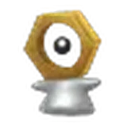
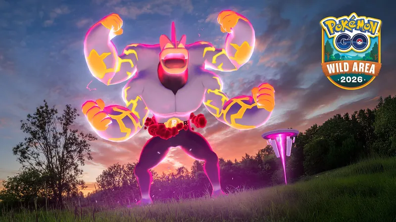

Pokémon GO 曠野地帶 2026 前導活動
曠野週
曠野週是 11/14～15「曠野地帶：全球」的前導活動，重點在團體戰與極巨對戰：前兩天晚上是蒼響（劍之王）與藏瑪然特（盾之王）的團體戰時間，後三天每天換一隻傳說極巨對戰，11/12 的極巨化雷吉鐸拉戈是首度登場。遠距團體戰上限放寬到 30 次，再搭配免費的 GO Pass 累積點數，週末前把資源準備好。

GO Pass 獎勵極巨化美錄坦首度登場每日行程
- 11/6–11/8登入領取限時調查：超極巨化怪力強化週！免費，完成後遇見超極巨化怪力；11/15 23:59 前完成。
- 11/9（一）18:00–19:00團體戰時間：蒼響（劍之王）傳說團體戰整週都有蒼響與藏瑪然特，這一小時特別多。
- 11/10（二）18:00–19:00團體戰時間：藏瑪然特（盾之王）
- 11/11（三）全天＋18:00–19:00傳說極巨對戰：極巨化雷吉斯奇魯18:00～19:00 也會在一般極巨對戰（能量點）出現。
- 11/12（四）全天＋18:00–19:00傳說極巨對戰：極巨化雷吉鐸拉戈首度登場；18:00～19:00 也會在一般極巨對戰出現。
- 11/13（五）全天＋18:00–19:00傳說極巨對戰：極巨化拉帝亞斯、拉帝歐斯
- 11/14–11/15每天 10:00–18:00Pokémon GO 曠野地帶 2026：全球 →超極巨化鋁鋼龍、極巨化帝牙盧卡與帕路奇亞。

 活動加成
活動加成
11/9～11/15 暫停「每日新發現」。
- 11/9～11/13 遠距團體戰參與上限提高到 30 次；11/14～15 不限次數
- 使用「重要的寶箱」有機會遇見異色索財靈
- 使用神秘盒子有機會遇見異色美錄坦，而且開啟神秘盒子的冷卻時間縮短
- 可經由寶可補給站與友情禮物獲得曠野地帶主題貼圖
- 蒼響（劍之王）的冒險效果「巨獸斬」效果提高
- 藏瑪然特（盾之王）的冒險效果「巨獸彈」效果提高
- 極巨對戰時能量條累積速度提高
 團體戰與極巨對戰
團體戰與極巨對戰
以下整週都有；傳說極巨對戰的寶可夢在各自日期的 18:00～19:00 也會在一般極巨對戰出現。
一星・二星極巨對戰
傳說極巨對戰11/11・11/12・11/13
打倒蒼響（劍之王）或藏瑪然特（盾之王）可獲得「劍王能量」或「盾王能量」。活動期間在傳說團體戰與傳說極巨對戰捕捉的寶可夢，有機會附上全新特別背卡。
野生出現
活動期間也會推出曠野地帶主題的田野調查，完成後可遇見活動主題寶可夢；任務內容官方尚未公布。
特別招式
 限時調查：超極巨化怪力強化週！
限時調查：超極巨化怪力強化週！

11/6～11/8 期間登入就能領取，所有訓練家都有。完成後遇見超極巨化怪力，還能拿到腕力的糖果、糖果XL 與極巨粒子，正好拿來強化，準備週末挑戰超極巨化鋁鋼龍。
- 探索 5 公里超極巨化怪力
- 在 2 個不同的日子捕捉寶可夢腕力的糖果×110
- 在 3 個不同的日子捕捉寶可夢極巨粒子×600
- 在 4 個不同的日子捕捉寶可夢
 腕力的糖果XL×45
腕力的糖果XL×45 - 在 5 個不同的日子捕捉寶可夢極巨粒子×800
- 必須在 11/15 23:59 前完成課題並領取獎勵。
- 「在不同的日子捕捉」需要 5 天各抓 1 隻，11/8 前領到後每天記得抓一隻。
 GO Pass：曠野週
GO Pass：曠野週
11/9 10:00 起自動獲得免費的「GO Pass：曠野週」，到 11/15 18:00 為止累積 GO點數升級。11/9～11/13 每天有點數上限，11/14～15 沒有上限。解鎖的獎勵要在 11/17 23:59 前領取。
- 遇見極巨化美錄坦的機會
- 遇見活動主題寶可夢的機會
- 換裝道具「GO曠野地帶2026 T恤（紫）」
- 星星沙子、XP、精靈球、糖果等
- 1 個銀色王冠（極限特訓用）
- 額外遇見極巨化美錄坦的機會
- 換裝道具「鋁鋼龍長褲」
- 薰香、幸運蛋等付費道具
主里程碑獎勵加碼
- 25 級活動期間放入孵化器的蛋，孵化距離縮短為 1/2免費版
- 1 級完成團體戰、極巨對戰各額外 5,000 XP豪華版
- 2 級解鎖與升級極巨招式所需的極巨粒子減為 3/4豪華版
- 3 級完成團體戰、極巨對戰各額外 1 顆糖果；等級 31 以上再多 1 顆糖果XL豪華版
- 銀色王冠可以把寶可夢的攻擊、防禦或 HP 其中一項提升到上限（極限特訓），寶可夢必須是「好夥伴」以上；本次的銀色王冠 11/22 23:59 過期。
- 受過極限特訓的寶可夢無法傳送到 Pokémon HOME；暗影寶可夢或能力已滿的寶可夢不能參加。
- 豪華版隨時都能購買，之前已達成的獎勵也能補領。
攻略重點
- 週一、週二晚上排團
蒼響與藏瑪然特整週都在傳說團體戰，但 18:00～19:00 團體戰時間最集中；打倒牠們拿到的劍王、盾王能量，週末極巨對戰用得到。
- 遠距團體戰上限 30 次
11/9～11/13 可以參加 30 次遠距團體戰，11/14～15 直接不限次數，沒辦法出門也能打。
- 限時調查要在 11/8 前領
超極巨化怪力強化週的限時調查只開放 11/6～11/8 領取，領到後要 5 個不同的日子各抓一隻寶可夢。
- GO Pass 先刷到每日上限
11/9～11/13 每天都有 GO點數上限，每天刷滿；11/14～15 沒有上限，可以一口氣衝等級。
- 銀色王冠別放到過期
豪華版的銀色王冠 11/22 23:59 過期，先想好要拿哪隻好夥伴做極限特訓。
 常見問題
常見問題
曠野週是什麼時候？
2026 年 11 月 9 日 10:00～11 月 13 日 20:00；GO Pass 與部分加成延續到 11 月 15 日 18:00。
雷吉斯奇魯是哪一隻？
雷吉斯奇魯是鋼屬性的傳說寶可夢（#379，英文 Registeel），11/11 在傳說極巨對戰登場，活動期間捕捉會學會一般招式「金屬爪」。
極巨化雷吉鐸拉戈什麼時候打？
11 月 12 日在傳說極巨對戰首度登場；當天 18:00～19:00 也會出現在一般極巨對戰（能量點）。
GO Pass：曠野週要花錢嗎？
免費版自動獲得；豪華版 US$14.99，或 US$19.99 直接升 10 級，可額外拿到銀色王冠、鋁鋼龍長褲與付費道具。
超極巨化怪力的限時調查怎麼拿？
11/6 10:00～11/8 23:59 期間登入就會領到，所有人免費；要在 11/15 23:59 前完成。